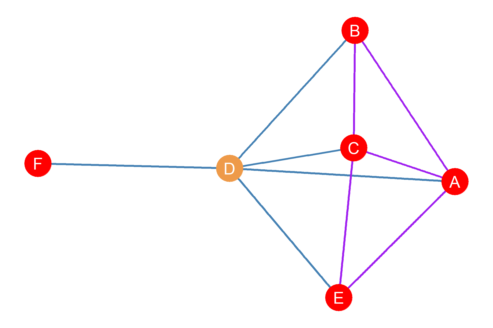
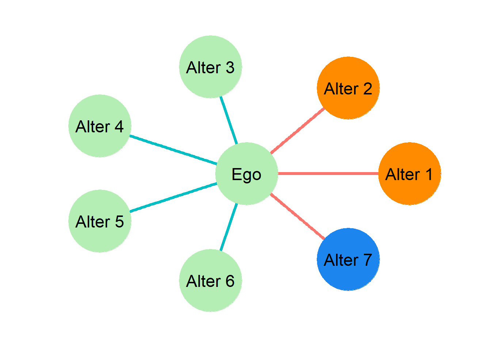

25 Ego Network Metrics
25.1 Ego Graphs
Consider Figure Figure 6.1 again. If we solved the boundary specification problem, then this could be considered an example of a whole network. All the relevant actors and social ties are included. However, sometimes, we do not have that information. Instead, what we have is network data collected from the point of a single person. For instance, let us say, that instead of collecting information on all the actors depicted in Figure Figure 6.1), we only interviewed actor D and ask them to name the people they spend time with and tell us about the relations between those people.
In that case, we would have end up with a graph that looks like Figure 25.1. This is called a simple ego graph. Ego graphs are also referred to as centered graphs (Freeman 1982), because they are graphs that are centered around a focal node, namely, ego. The reason we call it “simple” is because the ego graph, just like the overall graph of which it is a subgraph, contains only undirected, binary (present or absent) edges, and no loops (self-edges), which are the conditions that define simple graphs (see Chapter 3).
Note that in the ego graph shown as Figure Figure 25.1, all nodes are a subset of the original graph, and all edges are also a subset of the original graph shown in Figure Figure 6.1). So if \(G_D\) if node D’s ego graph, and \(G\) is the original undirected graph, then \(G_D = (E_D, V_D)\), \(E_D \subset E\) and \(V_D \subset V\).1
25.2 Ego Networks
Ego graphs are useful for representing egocentric networks—often shortened to just ego networks or even ego nets—also called personal networks. These are a particular type of network meant to represent a set of social relations from the perspective of a focal person.
In the point and line graph representation of an ego-network, the person of interest, or ego, which is the Latin word for “self”, is usually represented at the center of the graph surrounded by their contacts; these are referred by the Latin word for “others,” namely, alters. Ego networks will usually contain links indicating the relationship between alters, as seen from the perspective of ego.
As a matter of historical fact, it is likely that the first person to use the ego network as an analytical tool was the anthropologist J. Clyde Mitchell. Who called it a reticulum. According to Michell a reticulum consisted of “the direct links radiating from a particular Ego to other individuals in a situation, and the links which connect those individuals who are directly tied to Ego, and one another” (Mitchell 1969), which is precisely what is meant by an ego network.
In the typical ego network diagram, D is the ego node (shown in tan in Figure Figure 25.1) and is depicted as the center of the ego graph. The alter nodes are A, B, C, E and F (shown in red in Figure Figure 25.1) are shown as “satellites” orbiting the ego node.
Figure Figure 25.1 also shows that in an ego network there are two kinds edges we may be interested in and that we need to keep separate. First there are ego-to-alter edges (shown in blue in Figure Figure 25.1)), indicating the alters ego is connected to. In an ego network, ego-to-alter links are obligatory, meaning that they all should be present. Thus, if, like in Figure Figure 25.1 there are five alters depicted, there should also be five ego-to-alter links. As you can see, that is indeed the case: \(\{DA, DB, DC, DE, DF\}\).
Second, there are alter-to-alter links (shown in purple in Figure 25.1) indicating relationships between alters that do not involve ego, but that only include other nodes that are connected to ego via ego-to-alter links. These are optional, in the sense that they could or could not exist. While, in an ego network, ego is necessarily connected to their alters, alters may or may not be connected to one another. Thus, in Figure Figure Figure 25.1, there are five alter-to-alter links, namely, \(\{AC, AB, AE, BC, CE\}\), but these are not all the possible ones that could exist. For instance, alters E and F are a null (disconnected) dyad in the ego graph, and so are alters E and F. Later in the lesson, we will show you how to compute the maximum number of expected connections in an ego network so as to compare them to the ones we actually observe (hint: it has something to do with the formula for graph density).
For example, if you were to ask someone to name their friends (or any other type of alter), they will tell you who their friends are. They could even tell you whether two or their friends knew one another or not. However, they typically will not be able to you about the entirety of each of their alter’s networks (e.g., every person known by their alters and the connections between these others). Thus, while in Figure Figure 6.1) we have a graph of the whole network, in the ego-network case, such as Figure Figure 25.1, we are only getting a small part of the overall social network, centered on a single person.2
25.3 What Ego Networks Tell Us
While it might seem like we are unable to do much with ego-networks, that is definitely not the case! While having data on only one person’s ego would not tell scholars much, when we have tens, hundreds, or thousands of ego-networks we are able to analyze systematic differences in the ways different types of people structure their social worlds (Marsden 1987), or, as is more likely from a sociological perspective, have it structured for them by social forces beyond their direct control.
For example, if all the students in the class fill out ego-networks of their friends and family, could we find that certain types of people have more friends? Do people with more family members also have more friends, or do they have fewer friends? Are the friends of some people more likely to be friends with one another? Do some people have all women or all people their same race or ethnicity in their ego-networks?
These are empirical questions which, when scholars creatively compare egocentric networks, we are able to potentially answer. Research does not have to only use one type of relationship when collecting network data, and this would be one such case when combining egocentric networks of both friendship and family ties into a single personal network of emotional support or some other socially meaningful exchange.
Once we have collected ego network data, using the standard battery of name generators and name interpreters, we may be interested in computing certain metrics that allow us to characterize each personal (ego) network in terms of certain ego network properties of interest. There are four pieces of information we need to compute all the relevant ego network properties. These are:
- The number of ego-to-alter ties
- The number of alters
- The number of alter-to-alter ties
- Sociodemographic characteristics of ego (e.g., age, gender identity, racial identity, etc.)
- Sociodemographic characteristics of alter (e.g., age, gender identity, racial identity, etc.).
Given this information, there are four main types of ego network properties that we could be interested in. These are:
- Size: Total number of ego-alter ties
- Diversity: Variation in alter attributes
- Homogeneity: Ties to alter same/different from ego
- Composition: Proportion of certain types of alter ties
- Clustering: Density of alter-to-alter network
Table tbl-ego-net-props shows each ego-network property with a brief definition, showing the type of information we need to compute each.
| Ego-alter ties | Alter-Alter Ties | Ego Attributes | Alter Attributes | |
|---|---|---|---|---|
| Size | X | |||
| Homogeneity | X | X | X | |
| Diversity | X | |||
| Composition | X | |||
| Clustering | X |
25.3.1 Ego Graph Notation
In what follows we will abide by the following notational conventions:
- We will refer to the ego node as \(Ego\).
- We will refer to the set of ego-to-alter edges as \(E_{ea}\).
- We will refer to the set of alter-to-alter edges as \(E_{aa}\).
- We will refer to the set of alter nodes as \(N(Ego)\) which can be read as “ego’s neighborhood.”
25.4 Ego Network Size
The size (\(S(ego)\)) of the ego network is the simplest metrics we can compute. It is given by a count of the ego-to-alter ties (\(E_{ij}\)). Note that in this case, ego-network-size is equivalent to the number of neighbors (\(N(Ego)\)) ego has in the ego graph, which is also the degree of the ego node (\(k^{Ego}\)) in the larger graph. Thus, for ego networks, size and degree are the same metric, and is given either by the cardinality of ego’s neighborhood:
\[ S(Ego) = |N(ego)| \tag{25.1}\]
Or the cardinality of the ego-to-alter edge set:
\[ S(Ego) = |E_{ea}| \tag{25.2}\]
Thus, in the example shown in Figure Figure 25.1:
\[ S(Ego) = |N(Ego)| = |\{A, B, C, E, F\}| = 5 \]
Or equivalently:
\[ S(Ego) = |E_{ea}| = |\{DA, DB, DC, DE, DF\}| = 5 \]
25.5 Ego Network Homophily
Another property of ego networks we may be interested in measuring is homogeneity. That is, we may wan to ask: Do people connect to others that similar to themselves or do they connect to to others that are different from them? People can be similar or different from others in an infinity of ways. Sociologists are primarily interested in similarity or difference along lines of social position or social categories. For instance, in human societies gender is an important marker of social position, as is racial identification, class identification, age, occupation, or educational attainment.
Homophily is the idea that people with similar personal or social traits will tend to have relationships with each other compared to having relationships with those unlike themselves. Etymologically, the word is a simple combination of homo, meaning same, and philia, meaning love or liking. Thus, homophily is literally a like or love of the same. Many languages have some phrase capturing this propensity, and in English it is often idiomatically expressed as “birds of a feather flock together” (McPherson, Smith-Lovin, and Cook 2001)
The theory of homophily says that all else equal, people will tend to associate with others that are similar to themselves. As we have seen before, there are various reasons for why this might be, both psychological (people prefer similarity) to sociological (social contexts induce people to link to similar others).
25.5.1 Fun Facts:
Many languages have idioms for homophily as a social phenomenom. Just a few include
Japanese- Racoon dogs from the same den (Onazi ana no mujina)
French- Those who ressemble each other assemble together (Qui se ressemble s’assemble)
Italian- God makes them then couples them (Dio li fa e poi li accoppia)
Have an idiom from another language for homophily? Let us know so we can include it!
25.6 EI Homophily Index
The EI homophily index is one of the most useful ways to think about homophily in an ego-network. The EI homophily index is a relative measure of homophily because it does not consider the underlying population as would be required in an expected rate. Although it might be nice to calculate an expected rate, researchers can often do interesting things even without this data.
The EI homophily index is a measure of in- and out-group preference. One simply subtracts the number of out-group ties from the number of in-group ties, divided by the total number of ties. This measure thus uses information on ego-to-alter ties, and both ego and alter characteristics.
\[ EI=\frac{External-Internal}{External+Internal} \tag{25.3}\]
Thus, an EI score of -1 means complete homophily- the individual only has relationships with actors of the same “type” as they themselves are. An EI score of 1 means complete heterophily- all the alters are of a different “type” than they themselves are. Finally, an EI score of 0 means that an equal number of alters are of both the same “type” as the ego, and different types.

To calculate the EI score for the above ego, we must first ask along what dimension of homophily we are interested in. This must be done to reflect our research question. Let us presume however that we are interested in the relationship between gender identification and friendship networks. We might ask if the friendship networks of high-schoolers are changing over time. If we had older data on friendships, say from 40 years ago, we could compare it with friendship networks from high school students today.
An example of an ego network in which the nodes are classified by gender identification is shown in Figure Figure 25.2. In the figure, nodes that identify as men are shown in green, those that identify as women are orange, and those that identify as nonbinary are blue. Notice that the ego in this case identifies as a man. also notice that ego has four alters who also identify as men, two that identify as women, and one non-binary alter Thus, ego has four ego-to-alter ties that connect him to alters who are in the same category as himself on the social attribute of interest. These are internal ties because they connect ego to people who are similar to himself (shown in teal). Ego also has three ego-to-alter ties who are not the same as ego in the attribute of interest, regardless of them belonging to different classifications among themselves. These are external ties, because they connect ego to people who are different from himself (shown in red).
Given this information, the EI index for the ego in Figure Figure 25.2 can be computed as:
\[ EI=\frac{External-Internal}{External+Internal}=\frac{3-4}{3+4}=\frac{-1}{7}=-0.14 \]
This gives us an EI score just under zero, which indicates a slight preference for associating with similar others in terms of gender identity. The EI score ranges from -1.0 to +1.0. EI scores below zero (and approaching -1) indicate a tendency towards homophily (associating with similar others). EI scores above zero (and approching 1.0) indicate a tendecy towards associating with dissimilar others.3 Finally, an EI score around zero suggests that the ego-network is balanced in terms of an equal number of similar and dissimilar alters.
25.7 Ego Network Diversity
We may be interested in how diverse ego’s contacts are. Do they all belong to the same social group or is ego connected to a wide range of contacts? Note that the only piece of information we need here have to do with characteristics of ego’s contacts. We do not need to know anything about ego to know how diverse their networks are. So the connection between diversity and ego’s characteristics is empirical rather than definitional.4
The most popular measure of diversity for ego networks is Blau’s heterogeneity index (H). Quite simply, H is the sum of the square of the percentage (p) of the ego’s network belonging to particular groups, subtracted from one:
\[ H = 1-\sum_{k}p_k^{2} \tag{25.4}\]
Unlike in the EI homophily index, ego’s own group membership does not matter. A woman with only men friends would have an H-index of 0, just as a woman with only female friends would also have an H index of 0. An H-index of zero simply means that there is no diversity in the types of friends the ego has. Conversely, an H index score that approaches towards 1 implies greater heterogeneity, or diversity, in an ego’s network relations. For instance, someone with equal number of men and women friends, or a woman who one-third women friends, one-third men friends, and one-third of friends who are nonbinary would have an H-index of 1.0 with respect to gender diversity.
Remember that we can to compute ego network diversity, we need to pick which characteristic we are measuring gender diversity on. For instance, and ego network can be non-diverse with respect to race (each of ego’s alters is of the same race), but be very diverse with respect to education (ego has contacts from a wide range of educational backgrounds). So there is no such thing as a “diverse” ego network in general (or a non-diverse one). You always have to specify what social characteristic you are talking about. So there is ego-network diversity with respect to gender identification, which is different from that with respect to racial identity of alters, and so on.
For instance, we may want to know how diverse and ego network is with respect to the gender identification of alters like we considered in the previous example. Thus, to the H diversity index of the ego network shown in Figure Figure 25.2, first it is a matter of identifying the different groups the alters in ego’s network belong to, where the groups are defined their gender identification. As we saw, this spans three groups, men, women, and nonbinary. So to figure out ego’s diversity with respect to gender using Equation 25.4, we would have to compute:
\[ H = 1- (p^2_{men} + p^2_{women} + p^2_{nonbinary}) \]
As shown above, the ego’s network has ties to three different groups that we are interested in as this is how many gender identities are in the ego’s network. The next step is to find what percentage of each group makes up the ego’s network. Once this is done, a little bit of math solves for the H index score. So we know that ego has four alters who identify as men. This means that \(p_{male} = \frac{4}{7}\). Four out of the seven contacts in ego’s network are men. Writing this quantity for all three gender identification groups in ego’s network yields:
\[ \begin{split} H &= 1- \left(\left[\frac{4}{7}\right]^2_{men} + \left[\frac{2}{7}\right]^2_{women} + \left[\frac{1}{7}\right]^2_{nonbinary}\right) \\ H &= 1- (0.57^2+ 0.28^2 + 0.14^2) \\ H &= 1- (0.33+ 0.08 + 0.02) \\ H &= 1 - 0.43 \\ H &= 0.57 \end{split} \]
The resulting H index is 0.57. We might ask: What does this mean? Well, we can compare this score to some extreme hypothetical cases. For instance, if Ego’s contacts where all of the same gender identification then there would be no diversity in the ego-network. In this case, the H-index would take its minimum value of zero, meaning that all of a person’s friends come from the same group. The fact that the H-index is substantially above zero tells us that there’s quite a lot of gender diversity in this ego network.
The H-index gets larger (approaching one) the more diverse a person’s ego network gets. The H index reaches its maximum when people from different groups are equally represented in Ego’s network. For instance, a maximally diverse ego-network with respect to gender identification would contain equal number of men, women, and nonbinary identifying people. So, if Ego has six friends, they would have maximum gender diversity of they have two women friends, two men friends and two nonbinary identifying friends.
Technically, the maximum H is given by (Solanas et al. 2012):
\[ H_{max} = 1 - \frac{1}{k} \tag{25.5}\]
Where \(k\) is the number of categories of the sociodemographic dimension being considered. In the gender identification example \(k=3\), but if we were studying ego-network diversity along different demographics (e.g., race or education), \(k\) would be a larger number.
So to return to our example is \(H= 0.57\) a large number? Well, let’s compare it to the maximum value it could take. With \(k=3\) gender categories, the maximum H is given by:
\[ H_{max} = 1 - \frac{1}{3} = 1 - 0.33 = 0.67 \]
We can divide the observed \(H\) by this hypothetical maximum to see how close Ego is to the ideal of a maximally diverse network with respect to gender. This gives us \(\frac{H}{H_{max}} = \frac{0.57}{0.67} = 0.85\). So this means that Ego’s network is pretty diverse (at 85% percent maximum diversity), but has a bit more room to grow to reach maximum diversity!
25.8 Clustering Coefficient
By definition, everyone knows the ego, but to what extent does someone’s friends know each other? For ego-networks, the tendency of ego’s friends to be friends with one another is called clustering and this ego network property is measured via the clustering coefficient (\(CC\)). Consider Figure Figure 25.1, again. In that ego graph, we can see that some of ego’s alters do know each other but some of them do not.
The \(CC\) is calculated by computing the density of the subgraph among alters that remains when ego and the edges that are incident on ego (e.g., the ego-to-alter edges) are removed. This can range from zero (none of ego’s alters are connected to one another) to one (all of ego’s alters are friends with each other) or some fraction in between (for instance, a CC of 0.5 means that 50% of the total possible number of relationships between ego’s alters are present).
Since we are already know how to compute the density of undirected graphs (see the lesson on graph metrics), then we know that the clustering coefficient for an ego network can be obtained using this formula:
\[ CC_i = \frac{2m}{n(n-1)} \tag{25.6}\]
Where \(n\) is the size of the ego network size (number of alters) and \(m\) is the number of alter-to-alter edges among alters surrounding ego. Thus, as noted, the clustering coefficient calculation ignores ego and the ego-to-alter edges.
We can compute the clustering coefficient for the ego network depicted in Figure Figure 25.1, because we know that \(n\) = 5 and \(m\) = 4. We then plug in these values into Equation 25.6, which gives us:
\[ CC_i = \frac{2m}{n(n-1)}=\frac{2 \times 4}{5 \times (5-1)}=\frac{8}{5 \times 4} = \frac{8}{20}=\frac{2}{5}=0.40 \]
Because the resulting clustering coefficient of \(0.40\), we can conclude that \(40\%\) of all possible ties among ego’s alters exist. Another way of putting it is that, if we were to pick two of ego’s alters at random the probability that the two would be part of a connected dyad is \(p = 0.40\). With multiple egos, we might thus be able to compare their personal networks to build theories about how the social world operates.
References
Freeman, Linton C. 1982. “Centered Graphs and the Structure of Ego Networks.” Mathematical Social Sciences 3 (3): 291–304.
Marsden, Peter V. 1987. “Core Discussion Networks of Americans.” American Sociological Review 52 (1): 122–31.
McPherson, Miller, Lynn Smith-Lovin, and James M Cook. 2001. “Birds of a Feather: Homophily in Social Networks.” Annual Review of Sociology 27 (1): 415–44.
Mitchell, James Clyde. 1969. “The Concept and Use of Social Networks.” In Social Networks in Urban Situations. Manchester University Press.
Solanas, Antonio, Rejina M Selvam, José Navarro, and David Leiva. 2012. “Some Common Indices of Group Diversity: Upper Boundaries.” Psychological Reports 111 (3): 777–96.
The mathematical symbol for subset is \(\subset\).↩︎
Reminder: Smaller clumps of a larger social network are also known as subgraphs↩︎
This also has a Latin name: heterophily.↩︎
For instance, we can ask: Do women have more diverse ego networks than men? Do Hispanics have more diverse ego networks than white people?↩︎